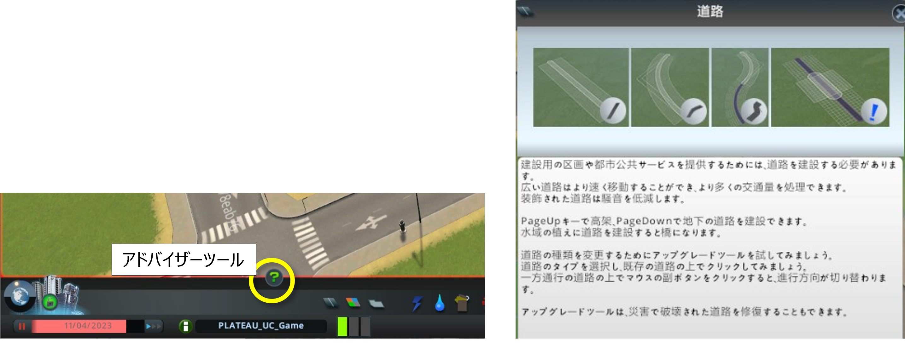
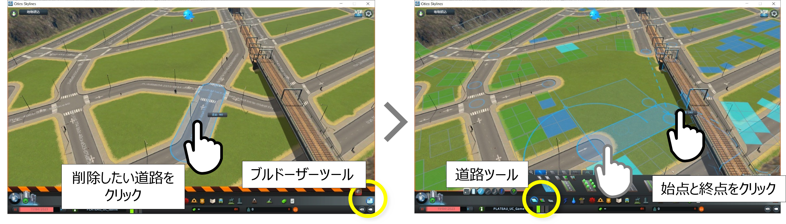
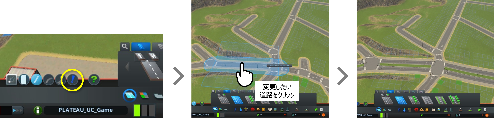
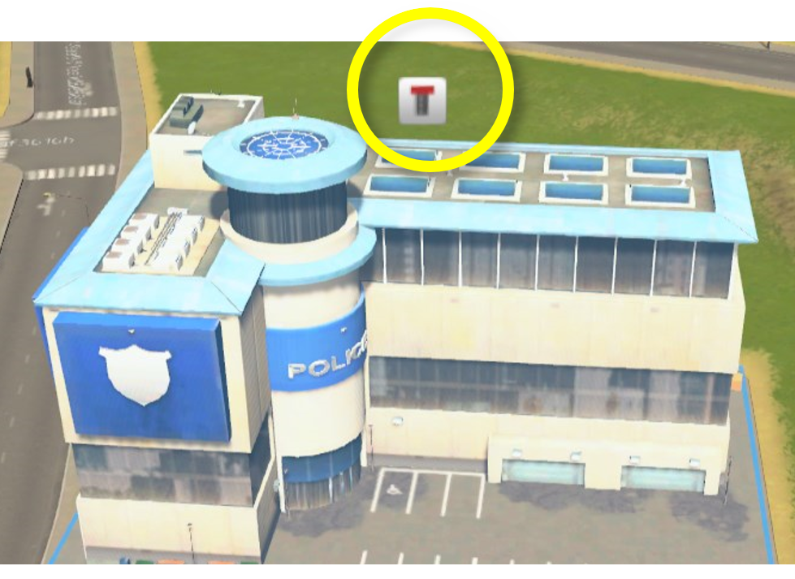
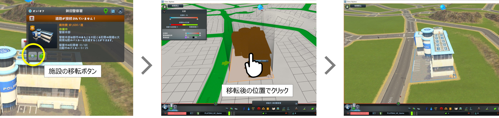
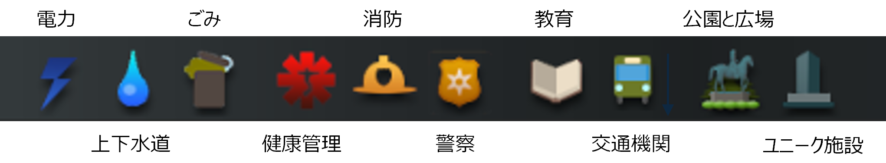
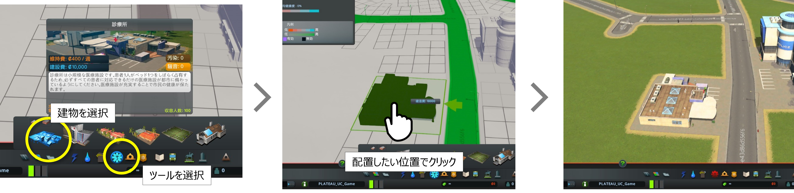
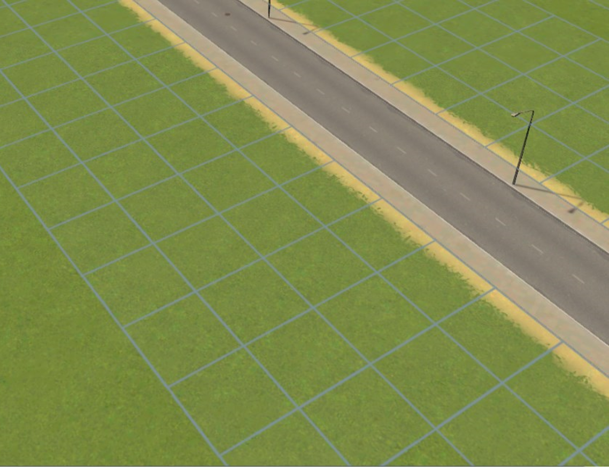
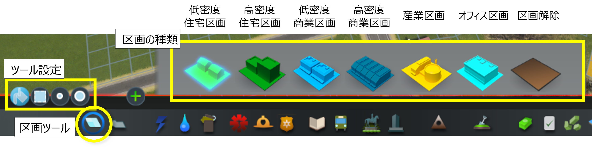

9. 細部調整
3D都市モデルの読込み後、再現が十分でない箇所の修正を行ってください。
※ Cities: Skylinesに標準で準備されている編集ツールの詳しい操作方法は、ツールを選択後、「アドバイザー」ツールをクリックして表示される内容を参照してください。

作業内容
9.1 道路の敷設（高速道路と道路の接続）
9.2 複雑な道路形状の修正（ロータリー部等）
9.3 道路の幅員や種類の変更
9.4 主要建物の位置調整
9.5 自動配置されない主要建物（ごみ処理、火葬場等）の配置
9.6 区画の設定
9.1 道路の敷設（高速道路と道路の接続）
① 「道路」ツールボタンをクリックしてツールを起動します。
② 上部に表示されるウィンドウから任意の道路の種類を選択します。
③ これ以降は、高速道路の敷設方法と同様の手順で道路の敷設を行い、高速道路と接続します。

9.2 複雑な道路形状の修正（ロータリー部等）
① 「ブルドーザー」ツールを選択し、形状の変更を行いたい道路の箇所をクリックして削除します。
② 前項と同様の手順で「道路」ツールを使用して敷設したい道路の種類を選択し、画面上でクリックして道路を敷設します。

9.3 道路の幅員や種類の変更
① 「道路」ツールを選択し、変更後の道路の種類を選択します。
② 画面下部に表示される「道路をアップグレード」ボタンをクリックします。
③ 変更したい道路の箇所をクリックします。
※ 道路形状が複雑な場合、「道路をアップグレード」が意図どおりに動作しない場合があります。
その場合は、前項の手順でいったん道路を削除した後、敷設の操作を行ってください。

9.4 主要建物の位置調整
未接道の警告が表示されている建物の位置調整を行ってください。

① ツールを選択していない状態で建物をクリックします。
② 施設の情報表示ウィンドウで「施設の移転」ボタンをクリックします。
③ 画面上でマウスを操作して移転後の位置でクリックします。

9.5 自動配置されない主要建物（ごみ処理、火葬場等）の配置
① 画面下部のツール群から配置したい建物が属するツールを選択します。
② ツール選択後に表示されるウィンドウで建物を選択します。
③ 画面上の配置したい位置をクリックします。


9.6 区画の設定
Cities: Skylinesでは道路を敷設すると道路沿いにセルが自動配置されます。

セルに建設される建物の種類は区画より決定されるため、「区画」ツールを使用して区画の設定を行ってください。
① 画面下部のツール群から配置したい建物が属するツールを選択します。
② 上部に表示される「区画の種類」ウィンドウから任意の区画を選択します。
③ 「ツール設定」でブラシの種類を選択します。

④ 設定したいセル上をクリック、又はドラッグします。
※ 区画の種類を変更する際は、「区画解除」を使用して設定を解除してから新たな区画を設定します。